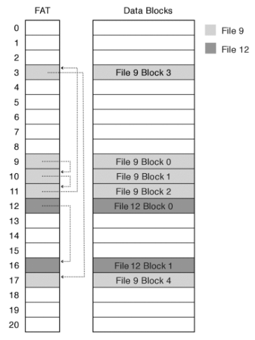
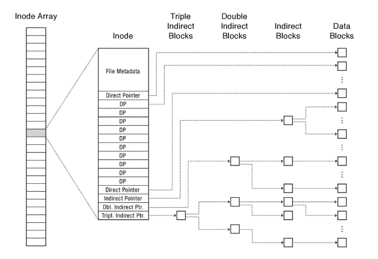
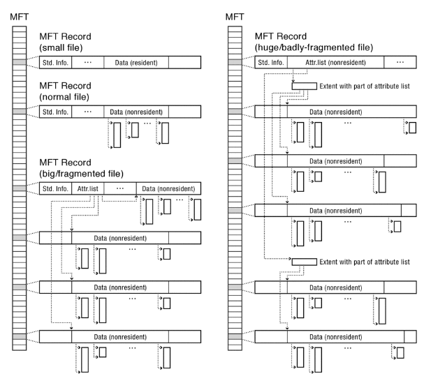

Filesystems
Table of Contents
1. Filesystems
A filesystem is a layer of the operating system that transforms block interfaces of disks (or other block devices) into files, directories, etc. Specifically, we want to take the limited hardware interface of blocks and provide:
- naming: find files by name, not block numbers
- organize files with directories
- map files to blocks
- protection: enforce access restrictions
- reliability: keep data intact despite crashes
When the user asks for some bytes, the file system is responsible for fetching the block corresponding to those bytes and returning just the correct portion of that block.
The disk is accessed as a linear array of sectors. To identify a sector, we use logical block addressing (LBA): every sector has an integer address, and the hardware controller translates from address to physical position. This shields the OS from the physical structure of the disk.
The file system needs to:
- track free disk blocks so we know where to put new data
- track which blocks contain data for which files
- track files in a directory
All of this also needs to be maintained somewhere on disk, since this metadata must survive reboots of the computer. However, we must load from disk into memory to manipulate, and loading from disk is very expensive. Additionally, since we can’t efficiently read/write a single word, we ideally want sequential access patterns across an entire block.
2. File Allocation Table (FAT)
The File Allocation Table (or FAT) filesystem was first introduced for MS-DOS in 1977. We have some number of disk blocks, with each disk block corresponding to an entry in the file allocation table. In order to figure out which block corresponds to our file, we index into the FAT with a file number. The FAT is simply a linked list structure that then shows us the collection of blocks that make up our file:

Note that files have no locality by default, so they become “fragmented” over time. The FAT is stored on disk.
A directory is a file containing mappings between file names and file numbers. In FAT, file attributes (e.g. read only) are kept in the directory entry, and not associated with the file itself. This means that you can have two different directory entries pointing at the same file, but with different permissions.
3. Berkeley Fast File System (FFS)
The Berkeley Fast File System (or FFS) is the foundation of the modern UNIX File System (UFS), which is widely used across various BSD operating systems. The index structure is an array of inodes, with a file number (or inumber) an index into the array of inodes. Each inode corresponds to a file and contains its metadata (therefore things like read/write permissions are stored with the file, not the directory).
The inode maintains a fixed, asymmetric multi-level tree structure to find storage blocks for files:

Direct, single indirect, double indirect, and triple indirect pointers are used for increasing levels of file size.
In early UNIX/DOS systems, headers were stored in a special array in the outermost cylinders of a disk. However, this meant all the inodes were in one place (which makes it susceptible to data loss).
FFS distributes the header information (inodes) closer to the data blocks. Often, the inodes for the file are stored in the same “cylinder group” as the parent directory of the file (making an ls run really fast).
3.1. Linux Ext3
The Linux Ext3 (Third Extended) file system largely maintains the same inode structure as FFS, with some differences in file metadata. The difference between Ext3 and Ext2 is that Ext3 adopted journaling.
A hard link is a mapping from a name to a file number in the directory structure. We can create extra hard links to a file with the link() system call, and remove links to a file with unlink(). The file contents are deleted once there are no more hard links to the file (the inode maintains reference counts for this purpose).
A soft link (or symbolic link) is a mapping from a file name to another file name in the directory. The operating system looks up the destination file name each time the program accesses the source file name. In Unix, soft links are created with the symlink() system call.
4. Windows New Technology File System (NTFS)
The New Technology File System (or NTFS) is the default file system on modern Windows systems. NTFS uses variable length extents rather than fixed blocks for data. Instead of a FAT or inode relay, NTFS uses a Master File Table (MFT) which is like a database where each entry contains metadata, a file’s data directly (for small files), a list of extents for the file’s data, and/or pointers to other MFT entries with more extent lists:

Notice that for extents, the only information required is the pointer to the extent and a length. For a huge, badly-fragmented file, we may need many MFT records to keep track of all the extents that make up a file.